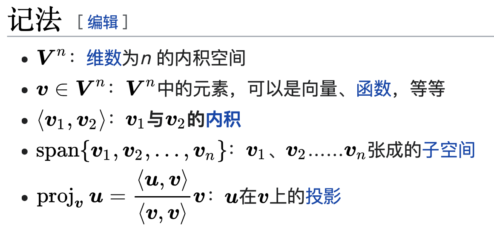

# 格拉姆 - 施密特正交化
在线性代数中，如果内积空间上的一组向量能够组成一个子空间，那么这一组向量就称为这个子空间的一个基。Gram－Schmidt 正交化提供了一种方法，能够通过这一子空间上的一个基得出子空间的一个正交基，并可进一步求出对应的标准正交基。
这种正交化方法以约尔根・佩德森・格拉姆和艾哈德・施密特命名，然而比他们更早的拉普拉斯（Laplace）和柯西（Cauchy）已经发现了这一方法。在李群分解中，这种方法被推广为岩泽分解（Iwasawa decomposition）。
在数值计算中，Gram－Schmidt 正交化是数值不稳定的，计算中累积的舍入误差会使最终结果的正交性变得很差。因此在实际应用中通常使用豪斯霍尔德变换或 Givens 旋转进行正交化。可以用于矩阵计算



https://vdn1.vzuu.com/SD/4221bcda-23b3-11eb-b03d-2ad3e7667ed4.mp4?disable_local_cache=1&c=avc.0.0&auth_key=1649515175-0-0-7f5b4c3f14541e575069dc21a5b2580e&f=mp4&bu=pico&expiration=1649515175&v=hw
https://vdn3.vzuu.com/SD/fab4b7c2-2334-11eb-9439-e2052b77c47a.mp4?disable_local_cache=1&c=avc.0.0&auth_key=1649515188-0-0-957fd2fb474fadaa32c4b9caa7498431&f=mp4&bu=pico&expiration=1649515188&v=tx